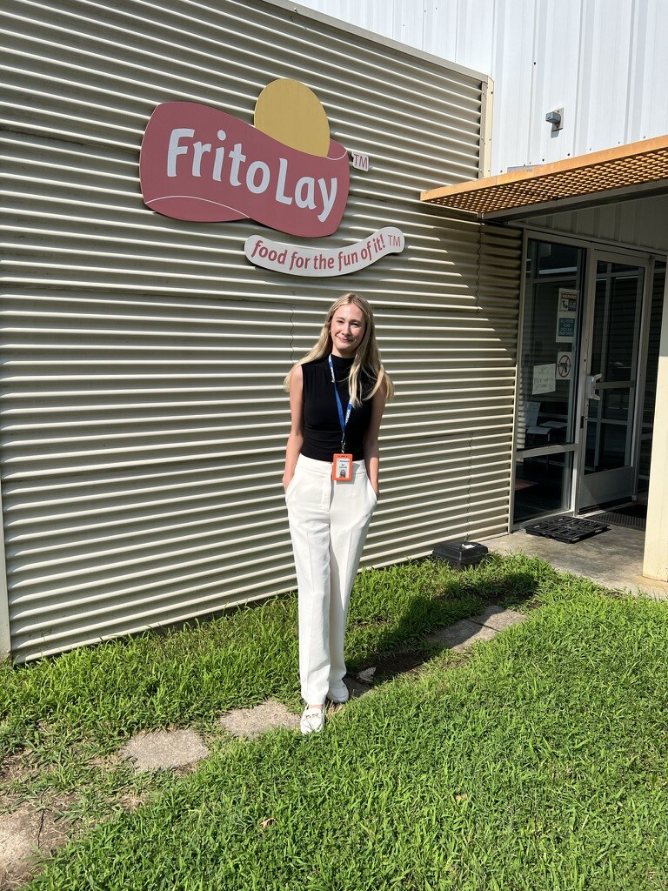

Mia Graham
Insights & analyticsMS Marketing student at UT Austin's McCombs School of Business, graduating May 2027. Excited to apply my skills in entry-level roles in consumer insights, marketing analytics, and brand management.
percentage points more holes scanned on the Frito-Lay routes I coached
member survey responses I designed for and analyzed at Sigma Kappa
point gap that made campus reputation the chapter's top priority
route sales rep survey responses I analyzed with a rank correlation
Selected work
Two projects, seen through from question to recommendation. Full case studies below.

Why reps resisted a new ordering system
I used office-wide data to find where ordering lagged, then rode routes with reps to understand the gap between what the system expected and what was really happening in stores. That shaped an office-wide training built on listening to reps and resonating with them through clear, transparent answers.
- Field research
- Survey design
- Power BI
- Excel
Finding the chapter's biggest gap
Recruitment data and two member surveys I designed pointed to the same answer: reputation was the barrier to growth. I made recommendations to build a long-term brand identity, starting with who the chapter recruited and how it presented itself.
- Survey design
- Importance-performance
- Brand strategy
- Google Sheets
Skills
What I used in the work above.
Research
- Survey design
- Field research
- Stakeholder interviews
- Open-ended response coding
- Benchmarking
Analysis
- Excel
- Power BI
- Google Sheets
- Importance-performance analysis
- Spearman rank correlation
- Segmentation
Strategy
- Brand strategy
- Root-cause analysis
- Content analysis
- Stakeholder management
- Training and presentations
About me
I'm completing my MS in Marketing at UT Austin's McCombs School of Business, a program built around analytics and AI. I earned my BA in Communication and Information Sciences from the University of Alabama in May 2026, with minors in math and chemistry.
I discovered I wanted to work in marketing through my role as VP of Member Experience for Sigma Kappa at Alabama, where I surveyed members on what mattered to them, found the gaps holding the chapter back, and built a brand strategy around them.
During summer 2025, I interned at Frito-Lay, where I worked with sales and ordering data in a CPG setting. Beyond my project, I got a close look at how a major snack company tracks and responds to changing consumer demand. In stores and in sales dashboards, I saw how what sold shifted by store format, season, promotion, and shelf placement.
I was also there for the push toward health-conscious snacking, including internal discussions about protein options and the Simply NKD line of Doritos and Cheetos without artificial colors or flavors. It gave me an inside look at how a major CPG brand responds when consumer needs change, which is exactly the kind of question I want to work on.
I'd love to talk about entry-level roles!
The best way to reach me is a message on LinkedIn.
Message me on LinkedInMy résumé is available on request.